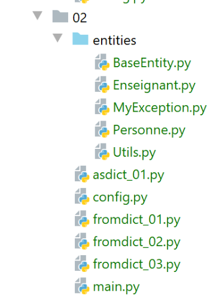

13. 通用类 [BaseEntity] 和 [MyException]
接下来我们将定义两个类，这些类在后续开发中将被频繁使用。

13.1. MyException 类
[MyException] 类（MyException.py）提供了一个自定义异常类：
# une classe d'exception propriétaire dérivant de [BaseException]
class MyException(BaseException):
# constructeur
def __init__(self: object, code: int, message: str):
# parent
BaseException.__init__(self, message)
# code erreur
self.code = code
# toString
def __str__(self):
return f"MyException[{self.code}, {super().__str__()}]"
# getter
@property
def code(self) -> int:
return self.__code
# setter
@code.setter
def code(self, code: int):
# le code d'erreur doit être un entier positif
if isinstance(code, int) and code > 0:
self.__code = code
else:
# exception
raise BaseException(f"code erreur {code} incorrect")
注释
- 第 2 行：[MyException] 类继承自预定义的 [BaseException] 类；
- 第 4 行：构造函数接受两个参数：
- [code]：一个整数错误代码；
- [message]：一条错误消息；
- 第 6 行：错误消息被传递给父类；
- 第 14–27 行：通过 getter/setter 访问 [code] 属性；
- 第 23–24 行：检查 [code] 属性的有效性：它必须是一个大于 0 的整数；
13.2. [BaseEntity] 类
[BaseEntity] 类将成为我们创建的大多数类的父类，这些类用于封装对象的相关信息。接下来，我们将主要使用两种类型的类：
- 其唯一目的是将单个对象的信息封装在一个地方的类。这些类除了 getter/setter 以及一个显示函数（__str__）外，不会有其他行为（方法）。如果有 N 个对象需要管理，则会实例化 N 个此类类。[BaseEntity] 将作为此类类的父类；
- 主要作用是封装方法且包含极少信息的类。这类类仅实例化一次（单例）。其作用是实现应用程序的算法；
[BaseEntity] 类定义如下：
注释
- [BaseEntity] 类的目的是为了方便对象与字典、以及对象与 JSON 之间的转换。它提供了以下方法：
- [asdict]：返回一个包含对象属性的字典；
- [fromdict]：根据字典创建对象；
- [asjson]：返回对象的 JSON 字符串，类似于 [__str__] 函数；
- [fromjson]：根据 JSON 字符串构建对象；
- [BaseEntity] 类旨在供其他类继承，而非直接使用；
- 第 22–25 行：[BaseEntity] 类仅有一个属性，即整型 [id]。该属性是对象的标识符。在实际应用中，能够区分同一类的不同实例通常非常有用。 我们将利用该属性实现这一目的，因为该属性在每个实例中都是唯一的。此外，对象通常来自数据库，在数据库中它们通过主键（通常为整数）进行标识。在这种情况下，[id] 将充当主键；
- 第 27–40 行：[id] 属性的设置器。我们验证其是否为 >= 0 的整数。若不满足此条件，则抛出类型为 [MyException] 的异常（第 39 行）；
- 第 10 行：[excluded_keys] 是类属性，而非实例属性。因此，我们写为 [BaseEntity.excluded_keys]。该类属性是一个列表，包含不参与 Object/Dictionary 和 Object/JSON 转换的类属性；
- 第 12–16 行：[get_allowed_keys] 返回该类的属性列表。在 Dictionary → Object 或 JSON → Object 转换中，仅接受该列表中存在的键。每个从 [BaseEntity] 类派生的类都需要重新定义此列表；
这里需要重点理解的是，[BaseEntity] 类的属性和函数对从 [BaseEntity] 派生的类是可访问的。这是需要掌握的关键点。
接下来我们将详细分析 [BaseEntity] 类的代码。该类实现较为复杂。初学者可仅阅读各函数作用的说明，无需深入研究代码本身。
13.2.1. [BaseEntity.fromdict] 方法
13.2.1.1. 定义
[fromdict] 方法允许您从字典初始化 [BaseEntity] 对象或其派生对象：
注释
- 第 1 行：函数接收 [state] 字典作为参数，当前对象将由此初始化；
- 第 4 行：我们调用调用 [fromdict] 函数的类的静态函数 [get_allowed_keys]。如果我们处理的是从 [BaseEntity] 派生的类，且该派生类已重定义了静态函数 [get_allowed_keys]，则调用的是该 [get_allowed_keys] 函数。每个派生类都会重定义此静态函数以声明其属性；
- 第 6 行：遍历 [state] 字典的键和值；
- 第 8 行：如果键 [key] 不是该类的属性之一，则：
- 则忽略该键；
- 抛出异常（第 10 行）。开发者通过传递相应的 [silent] 参数（第 1 行）来指定其偏好。如果尝试使用对象不具备的属性来初始化该对象，[silent] 的默认值会导致抛出异常；
- 第 14 行：如果键属于对象的属性，则使用预定义函数 [setattr] 将其赋值给对象 [self]；
- 第 16 行：该函数返回已初始化的对象；
13.2.1.2. 示例

13.2.1.2.1. [Utils] 类
[Utils] 类（Utils.py）如下所示：
它在第 3–11 行定义了一个静态方法，如果其参数 [str] 是一个非空字符串，则返回布尔值 true；
13.2.1.2.2. [Person] 类
[Person] 类（Person.py）继承自 [BaseEntity] 类：
- 第 8 行：[Person] 类继承自 [BaseEntity] 类；
- 第 8–65 行：我们保留了之前遇到的 [Person] 类的大部分内容。区别如下：
- 该类不再具有构造函数；
- 该类使用了 [MyException] 异常，例如第 65 行；
- 它有一个静态方法 [get_allowed_keys]（第 17–20 行），该方法定义了其属性的列表。特定于 [Person] 类的属性被添加到父类 [BaseEntity] 的属性中；
- 它有一个静态列表 [excluded_keys]，我们稍后将再次讨论；
13.2.1.2.3. [Teacher] 类
[Teacher] 类（Teacher.py）继承自 [Person] 类：
- 第 8 行：[Teacher] 类继承自 [Person] 类；
- 第 18–21 行：定义该类的属性列表；
- 第 37–38 行：[show] 方法显示教师的身份信息；
13.2.1.2.4. [config] 配置
示例脚本使用以下 [config] 配置：
- 第 8–10 行：包含项目依赖项的目录；
- 第 14–15 行：构建 Python 路径；
- 第 18 行：返回一个空字典（除了 syspath 之外没有其他配置）；
13.2.1.2.5. [fromdict_01] 脚本
[fromdict_01] 脚本如下：
- 第 10 行：我们通过字典创建一个 [Teacher] 对象。为此，我们使用类的默认构造函数创建一个 [Teacher] 对象，并对其调用 [fromdict] 方法。需要理解的是，此处执行的 [fromdict] 方法属于父类 [BaseEntity]。实际上：
- 系统会首先在 [Teacher] 类中查找 [fromdict] 方法。该方法不存在；
- 随后在父类 [Person] 中查找，但该方法不存在；
- 接着在父类 [BaseEntity] 中查找，该方法存在；
- 第 11 行：显示 [Teacher] 对象；
结果如下：
C:\Data\st-2020\dev\python\cours-2020\python3-flask-2020\venv\Scripts\python.exe C:/Data/st-2020/dev/python/cours-2020/python3-flask-2020/classes/02/fromdict_01.py
Enseignant[1, paul, lourou, 56]
Process finished with exit code 0
13.2.1.2.6. 脚本 [fromdict_02]
脚本 [fromdict_02] 如下：
- 第 10 行：我们创建了一位名字为空的教师。这应该会引发异常，因为 [Person] 类不接受空名字。此示例说明了字典与对象之间的区别。后者可以验证其属性，而字典则不能；
结果如下：
C:\Data\st-2020\dev\python\cours-2020\python3-flask-2020\venv\Scripts\python.exe C:/Data/st-2020/dev/python/cours-2020/python3-flask-2020/classes/02/fromdict_02.py
Traceback (most recent call last):
File "C:/Data/st-2020/dev/python/cours-2020/python3-flask-2020/classes/02/fromdict_02.py", line 10, in <module>
enseignant1 = Enseignant().fromdict({"id": 1, "nom": "lourou", "prénom": "", "âge": 56})
File "C:\Data\st-2020\dev\python\cours-2020\python3-flask-2020\classes\02/entities\BaseEntity.py", line 55, in fromdict
setattr(self, key, value)
File "C:\Data\st-2020\dev\python\cours-2020\python3-flask-2020\classes\02/entities\Personne.py", line 42, in prénom
raise MyException(11, "Le prénom doit être une chaîne de caractères non vide")
MyException.MyException: MyException[11, Le prénom doit être une chaîne de caractères non vide]
Process finished with exit code 1
13.2.1.2.7. 脚本 [fromdict_03]
脚本 [fromdict_03] 如下：
- 第 10 行：我们从一个字典中创建了一个教师对象，该字典包含一个不属于 [Teacher] 类的键（性别）。此时应引发异常；
结果如下：
C:\Data\st-2020\dev\python\cours-2020\python3-flask-2020\venv\Scripts\python.exe C:/Data/st-2020/dev/python/cours-2020/python3-flask-2020/classes/02/fromdict_03.py
Traceback (most recent call last):
File "C:/Data/st-2020/dev/python/cours-2020/python3-flask-2020/classes/02/fromdict_03.py", line 10, in <module>
enseignant1 = Enseignant().fromdict({"id": 1, "nom": "lourou", "prénom": "albert", "âge": 56, "sexe": "M"})
File "C:\Data\st-2020\dev\python\cours-2020\python3-flask-2020\classes\02/entities\BaseEntity.py", line 51, in fromdict
raise MyException(2, f"la clé [{key}] n'est pas autorisée")
MyException.MyException: MyException[2, la clé [sexe] n'est pas autorisée]
Process finished with exit code 1
13.2.1.2.8. 脚本 [fromdict_04]
脚本 [fromdict_04] 是 [fromdict_03] 的副本，仅有一处细微差异：
- 第 10 行：我们使用了 [silent=True] 参数，表示如果字典键不是 [Teacher] 类的属性，则应直接忽略。在这种情况下，不会引发异常；
结果如下：
C:\Data\st-2020\dev\python\cours-2020\python3-flask-2020\venv\Scripts\python.exe C:/Data/st-2020/dev/python/cours-2020/python3-flask-2020/classes/02/fromdict_04.py
Enseignant[1, albert, lourou, 56]
Process finished with exit code 0
13.2.2. [BaseEntity.asdict] 方法
13.2.2.1. 定义
[BaseEntity.asdict] 方法返回一个字典，其键为对象的属性：
def asdict(self, included_keys: list = None, excluded_keys: list =[]) -> dict:
# attributs de l'objet
attributes = self.__dict__
# les nouveaux attributs
new_attributes = {}
# on parcourt les attributs
for key, value in attributes.items():
# si la clé est explicitement demandée
if included_keys and key in included_keys:
self.set_value(key, value, new_attributes)
# sinon, si la clé n'est pas exclue
elif not included_keys and key not in self.__class__.excluded_keys and key not in excluded_keys:
self.set_value(key, value, new_attributes)
# on rend le dictionnaire des attributs
return new_attributes
注释
- 第 1 行：[asdict] 函数返回对象属性的字典；
- 第 1 行：[included_keys]：要包含在字典中的键的列表；
- 第 1 行：[excluded_keys]：要从字典中排除的键的列表；
- 第 3 行：属性 [self.__dict__] 返回对象的属性字典。属性名是键，其值是字典中的值。一个对象可能包含对其他对象的引用。在这种情况下，属性名前会加上其所属类的名称作为前缀。这是我们不希望看到的。我们希望属性不带前缀；
- 第 3 行：这里需要理解的是，如果 [asdict] 函数是在继承自 [BaseEntity] 的类中执行的，那么 [self.__dict__] 属性返回的是派生对象的属性字典；
- 第 5 行：我们将要构建的字典；
- 第 7 行：我们以 (key, value) 的形式遍历 [self.__dict__] 的值；
- 第 9 行：如果当前键属于待包含键的列表，则使用 [set_value] 函数（稍后将进行说明）将其添加到 [new_attributes] 字典中；
- 第 12 行：如果未提供 [included_keys] 参数，则使用 [excluded_keys] 参数。如果该属性不在应排除的属性列表中，则将其添加到 [new_attributes] 字典中；
- 第 12 行：有几种方法可以将属性从字典中排除：
- 该属性已在类属性级别 [excluded_keys] 中定义；
- 该属性已在传递给 [asdict] 函数的 [excluded_keys] 列表中定义；
- 存在 [included_keys] 参数且该属性未包含其中；
- 第 15 行：返回字典 [new_attributes]
第 10 行和第 13 行中的 [set_value] 函数如下：
注释
- 第 4 行：检查键是否为 __Class_key 形式。如果该键属于主对象包含的某个对象，则会采用这种形式。在这种情况下，我们只保留字符串 [key]；
- 第 7 行：我们仅保留字符串中最后两个下划线字符之后的字符串；
- 第 8–10 行：如果键不以 __Class_key 的形式出现，则保留其原样；
- 第 11–14 行：与键 [newkey] 关联的值由静态方法 [BaseEntity.check_value] 计算得出；
静态方法 [BaseEntity.check_value] 如下所示：
- 第 1 行：[check_value] 方法是静态的（即类方法，而非实例方法）。它将作为参数接收要与字典键关联的值：
- 第 17 行：如果该值是简单类型，则保持不变；
- 第 5-6 行：如果该值是 BaseEntity 类型，则用其字典替换该值。这将导致递归调用；
- 第 8–9 行：如果该值是列表，则将其替换为 [BaseEntity.list2list]；
- 第 11–12 行：如果该值是字典，则将其替换为 [BaseEntity.dict2dict]；
静态方法 [BaseEntity.list2list] 如下所示：
- 第 2 行：该方法接收一个列表并返回一个列表；
- 第 5-6 行：作为参数传递的列表中的每个值都被静态方法 [BaseEntity.check_value] 返回的值替换。因此，这是一个递归调用。静态方法 [BaseEntity.check_value] 会被调用，直到其参数 [value] 成为简单类型（而非 BaseEntity、列表或字典类型）；
静态方法 [BaseEntity.dict2dict] 如下所示：
- 第 2 行：该方法接收一个字典并返回一个字典；
- 第 5-6 行：作为参数传递的字典中的每个值都被静态方法 [BaseEntity.check_value] 返回的值替换。因此，这是一个递归调用。静态方法 [BaseEntity.check_value] 会被调用，直到其参数 [value] 成为简单类型（不是 BaseEntity、列表或字典）；
13.2.2.2. 示例
脚本 [asdict_01] 演示了 [asdict] 方法的多种用法：
执行结果如下：
C:\Data\st-2020\dev\python\cours-2020\python3-flask-2020\venv\Scripts\python.exe C:/Data/st-2020/dev/python/cours-2020/python3-flask-2020/classes/02/asdict_01.py
<class 'dict'>
{'_BaseEntity__id': 1, '_Personne__nom': 'lourou', '_Personne__prénom': 'paul', '_Personne__âge': 56}
{'id': 1, 'nom': 'lourou', 'prénom': 'paul', 'âge': 56}
{'id': 1, 'nom': 'lourou', 'prénom': 'paul'}
{"id": 1, "nom": "lourou", "âge": 56}
{'id': 2, 'nom': 'abélard', 'âge': 57}
{'nom': 'abélard'}
{'enseignants': [{'id': 1, 'nom': 'lourou', 'prénom': 'paul', 'âge': 56}, {'id': 2, 'nom': 'abélard', 'prénom': 'béatrice', 'âge': 57}]}
{'enseignants': [{'id': 1, 'nom': 'lourou', 'prénom': 'paul', 'âge': 56}, {'id': 2, 'nom': 'abélard', 'prénom': 'béatrice', 'âge': 57}], 'matières': {'maths': {'id': 1, 'nom': 'lourou', 'prénom': 'paul', 'âge': 56}, 'français': {'id': 2, 'nom': 'abélard', 'prénom': 'béatrice', 'âge': 57}}}
Process finished with exit code 0
- 第 4 行展示了 [asdict] 方法相较于使用 [__dict__] 属性的优势。属性被去除了类前缀，这使得它们更易于显示；
- 使用 [asdict] 方法有几种方式：
- 若需获取所有属性：使用无参数的 [asdict] 方法；
- 若仅需特定属性：
- 需要包含的属性比需要排除的更多：使用单个 [excluded_keys] 参数；
- 需要包含的属性比需要排除的少：我们仅使用 [included_keys] 参数；
13.2.3. [BaseEntity.asjson] 方法
该方法返回 [BaseEntity] 对象或其派生类的 JSON 字符串。它输出由 [asdict] 方法返回的字典的 JSON 字符串。其代码如下：
- 第 1 行：[asjson] 方法的参数与 [asdict] 方法的参数相同；
以下是一个使用此方法的示例（asjson_01）：
结果如下：
C:\Data\st-2020\dev\python\cours-2020\python3-flask-2020\venv\Scripts\python.exe C:/Data/st-2020/dev/python/cours-2020/python3-flask-2020/classes/02/asjson_01.py
<class 'str'>
{"id": 1, "nom": "lourou", "prénom": "paul"}
{"id": 1, "nom": "lourou", "âge": 56}
{"id": 2, "nom": "abélard", "âge": 57}
{"nom": "abélard"}
{"enseignants": [{"id": 1, "nom": "lourou", "prénom": "paul", "âge": 56}, {"id": 2, "nom": "abélard", "prénom": "béatrice", "âge": 57}]}
{"enseignants": [{"id": 1, "nom": "lourou", "prénom": "paul", "âge": 56}, {"id": 2, "nom": "abélard", "prénom": "béatrice", "âge": 57}], "matières": {"maths": {"id": 1, "nom": "lourou", "prénom": "paul", "âge": 56}, "français": {"id": 2, "nom": "abélard", "prénom": "béatrice", "âge": 57}}}
Process finished with exit code 0
[BaseEntity.__str__] 方法使用 [asjson] 方法来显示 [BaseEntity] 对象或其派生对象的标识：
# toString
def __str__(self) -> str:
return self.asjson()
13.2.4. [BaseEntity.fromjson] 方法
[BaseEntity.fromjson] 方法允许您从 JSON 字典初始化 [BaseEntity] 类型或其派生类型的对象。其代码如下：
- 第 1 行：该方法接受两个参数：
- [json_state]：用于初始化 [BaseEntity] 对象的 JSON 字典；
- [silent]：用于指定当 JSON 字典中存在无法作为 [BaseEntity] 对象属性的键时，是否触发异常（silent=False）或直接忽略（silent=True）；
- 第 3 行：我们首先构建一个表示该 JSON 字典的 Python 字典，然后使用 [fromdict] 方法从该 Python 字典初始化 [BaseEntity] 对象；
以下是一个示例（fromjson_01）：
- 第 11 行：我们创建了一个字典的 JSON 字符串；
- 第 12 行：使用该字符串初始化一个 [Enseignant] 对象；
- 第 13 行：显示该教师；
结果如下：
C:\Data\st-2020\dev\python\cours-2020\python3-flask-2020\venv\Scripts\python.exe C:/Data/st-2020/dev/python/cours-2020/python3-flask-2020/classes/02/fromjson_01.py
Enseignant[1, paul, lourou, 56]
Process finished with exit code 0
13.2.5. [main] 脚本
[main]脚本总结了遇到的各种方法：
执行结果如下：
C:\Data\st-2020\dev\python\cours-2020\python3-flask-2020\venv\Scripts\python.exe C:/Data/st-2020/dev/python/cours-2020/python3-flask-2020/classes/02/main.py
{'_ChildEntity__att1': 1, 'att2': 2}
{"att1": 1, "att2": 2}
MyException[2, la clé [att5] n'est pas autorisée]
{"att1": 1, "att2": 2, "att3": 3, "att4": 4}
{"att1": 1, "att2": 2, "att4": 4}
{'att2': 2, 'att4': 4}
{"att1": 1, "att4": 4}
MyException[1, L'attribut [att1] attend une valeur dans l'intervalle [1,10] (20)]
{"att1": 10, "att2": 20, "att4": {"att1": 1, "att2": 2, "att4": 4}}
{'att1': 1, 'att3': 3}
Process finished with exit code 0
请注意结果的第 2 行：正是属性 [ChildEntity.__dict__]（代码第 38 行）使我们能够确定应包含在 [included_keys] 和 [excluded_keys] 列表中的属性名称。 请注意，仍以结果的第 2 行为例，根据属性是通过 getter/setter 在类内定义，还是像创建字典键那样创建的，其名称可能带有类名 [ChildEntity] 前缀，也可能不带。